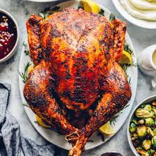

ğŸ ï¸
Terrific Turkey

This brilliant turkey recipe will take roughly 5 hours and give you a juicy product
When my second stepbrother got out of prison (don't ask, it's personal) (armed robbery), the first thing he wanted was a Thanksgiving dinner. Nevermind that it was August, this newly freedman (30 years, five counts 1st degree murder) wanted turkey. So turkey I shall make!
Ingredients:
Turkey:
- 12 to 18 pound turkey, fully thawed
- 1 onion, peeled and quartered
- 1 lemon, quartered
- 1 to 2 sprigs fresh rosemary
- 1 to 2 sprigs fresh thyme
- 1 to 2 sprigs fresh sage
- kosher salt and black pepper
Herb Butter
- ¾ cup unsalted butter, room temperature
- 6 cloves garlic, minced
- 1 teaspoon kosher salt
- ½ teaspoon black pepper
- 1 tablespoon finely chopped fresh rosemary
- 1 tablespoon finely chopped fresh thyme
Steps:
- Allow your turkey to come to room temperature by removing it from the fridge 1 hour before roasting. Then, remove the giblets.
- Preheat your oven to 325°F (160°C) and pat the outside of the turkey dry with paper towels. Season the cavity of the turkey with salt and pepper. Then fill it with the onion, lemon, and fresh herbs. If your turkey is smaller, don't overfill the cavity as you do want some airflow.
- In a small bowl, make the herb butter by stirring the softened butter, garlic, salt, pepper, rosemary and thyme together.
- Loosen the skin of the turkey gently by sliding your fingers underneath. Then rub about 1/3 of the herb butter between the skin and turkey breasts.
- Rub the remaining herb butter all over the entire outside of the turkey.
- Place the turkey on a roasting rack or on top of a bed of vegetables (if you don't have a rack), or both! Tuck the wing tips under the turkey to prevent them from burning.
- Place the turkey in the oven and roast for about 15 minutes per pound, or until the internal temperature reaches 158°-160°F. You don't need to baste the turkey, but do keep an eye on it after it's about 75% done. If you notice the skin browning too quickly, you can place aluminum foil on top. To verify the temperature, place a thermometer into the meatiest part of the thigh or breast. The turkey will continue to cook once it's removed from the oven and will rise in temperature to 165°F, after it's rested.
- Let the turkey to rest for 30 minutes before carving. This allows the juices to redistribute, making for a deliciously juicy turkey. To keep the turkey warm, you can cover the turkey with aluminum foil on the counter.
- Carve and serve the turkey. And make sure to save the juices from the pan to make turkey gravy!